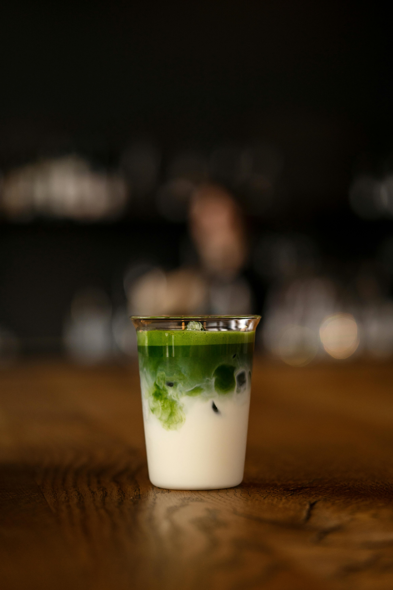

Back

Matcha Latte
Description
Green Tea Flavored Latte based on the popular Japanese ceremonial tea (my personal favorite).
Ingredients:
- 1 cup vanilla soy milk
- 1 teaspoon green tea powder (matcha)
- 1 teaspoon granular sucralose sweetener (such as Splenda®), or to taste
- ice cubes
Steps:
- Pour soy milk into a blender. Add matcha; blend until dissolved and the mixture is smooth, about 30 seconds. Add sucralose and blend until combined, about 10 seconds.
- Fill a glass with ice and pour in green tea mixture.